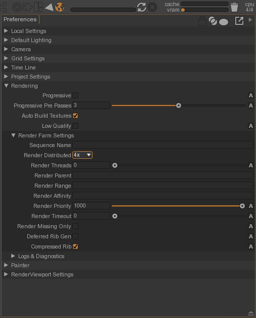
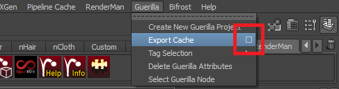
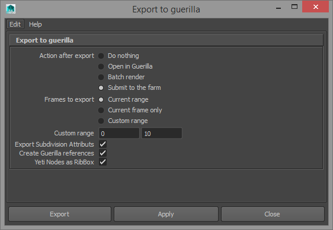
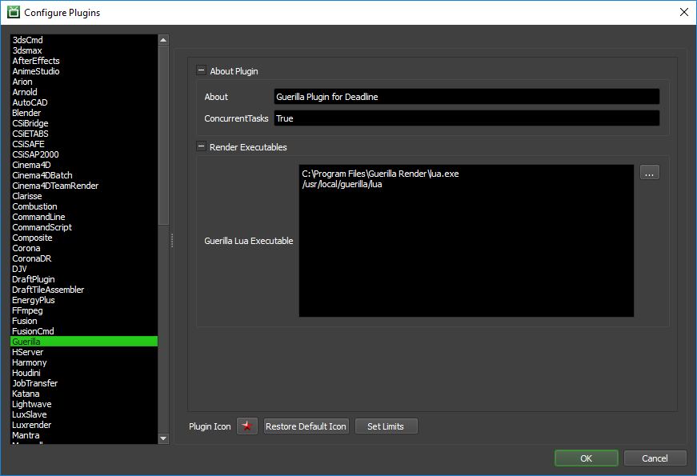

Guerilla¶
Job Submission¶
You can submit jobs from within Guerilla by installing the integrated submission script, or you can submit them from the Monitor. The instructions for installing the integrated submission script can be found further down this page.
To submit from within Guerilla, make sure Deadline is set as the Active Farm (see the integrated submission script section below for more information). Then open the Render menu in Guerilla and select Farm Render.

Submission Options¶
The general Deadline options are explained in the Job Submission documentation, and the Draft/Integration options are explained in the Draft and Integration documentation.
Submitting from Guerilla
To submit from Guerilla, open the Render menu in Guerilla and select Farm Render. When submitting from within Guerilla, the Job Name, Jobs Directory, Additional Arguments, and Frame List are set automatically based on the settings in your Guerilla project. In addition, job dependencies will automatically be created if necessary when multiple jobs are being submitted. For example, if you have a pre-render pass to bake out an object, both the pre and frame jobs will be submitted, and the frame job will be dependent on the pre job.
Distributed jobs are also supported when submitting from within Guerilla. To set up a distributed job, open the Preferences in Guerilla, expand Rendering, expand Render Farm Settings, and then set the Render Distributed setting to the number of distributed jobs to use.
It is also possible to submit jobs to Deadline directly from the Guerilla plugin in Maya. From the Guerilla menu, select Export Cache, but make sure to click the mouse on the square on the right.
When the export dialog comes up, select Submit To The Farm as the action to take after export, and then press the Export button. After the export has finished, the submission dialog will be shown, just like as if you were submitting from within Guerilla.
Submitting from the Monitor
When submitting from the Monitor, the necessary Lua files must already be exported from the Guerilla project you want to render. The Guerilla specific options are:
LUA Files: The Lua files to render. The Frame List will automatically be set based on the selected Lua file.
Additional Arguments: Additional command line arguments to pass to the Guerilla renderer.
Note that submitting from the Monitor isn’t as flexible, and can’t do things like automatically set up Guerilla job dependencies. It is typically recommended to submit from within Guerilla or Maya.
Cross-Platform Rendering Considerations¶
While Deadline does support path mapping for the path to the Lua file to be rendered, it does not support path mapping for the contents of any of the Guerilla documents, so it is recommended to follow the information below when rendering in a cross-platform environment.
Note that this information is taken directly from Guerilla’s documentation for file name and render farm considerations.
In order to perform cross-platform rendering with Guerilla, all the file names used in your documents (the .ghostdata file names, the texture file names, etc.) must be valid on all render nodes. One way to do this is to mount the same network drive on all the computers and store all the resources on the network.
Guerilla for Linux is able to translate the Windows file names into Linux-friendly file names. For example, the file name “c:\file.ext” will be translated to “$(C_DRIVE)/file.ext”. In order for this file name to work under Linux, you will have to define the “C_DRIVE” environment variable with a valid path on all the Linux computers.
In case of a heterogeneous render farm, always use the Windows style file names.
Plugin Configuration¶
You can configure the Guerilla plugin settings from the Monitor. While in power user mode, select Tools -> Configure Plugins and select the Guerilla plugin from the list on the left.
Render Executables
Guerilla Lua Executable: The path to the Guerilla lua executable used for rendering. Enter alternative paths on separate lines.
Integrated Submission Script Setup¶
The following procedures describe how to install the integrated Guerilla submission script. This script allows for submitting Guerilla render jobs to Deadline directly from within the Guerilla editing GUI.
You can either run the submitter installer or manually install the submission script.
Submitter Installer¶
Run the Submitter Installer located at <Repository>/submission/Guerilla/Installers.
Manual Installation¶
Copy the file:
[Repository]\submission\Guerilla\Client\deadline_renderfarm.lua to the *plugins* folder in your Guerilla installation folder.
FAQ¶
Are Guerilla job dependencies supported?
Yes. All pre, post, and frame type jobs will be submitted to Deadline with the appropriate dependencies set up.
Are distributed jobs supported?
Yes. Distributed jobs can be submitted to Deadline, and the appropriate dependencies will be set up.
Can I submit to Deadline from the Guerilla plugin in Maya?
Yes.
When submitting from Guerilla on Windows, a bunch of command prompts appear and disappear during submission.
This is due to the way that Lua (Guerilla’s scripting language) launches processes on Windows. Unfortunately, there is no known workaround at this time.
Error Messages And Meanings¶
This is a collection of known Guerilla error messages and their meanings, as well as possible solutions. We want to keep this list as up to date as possible, so if you run into an error message that isn’t listed here, please visit the Thinkbox Help Centre and let us know.
Currently, no error messages have been reported for this plugin.

{kind=link}
{kind=link}
{kind=link}
{kind=link}
{kind=link}
{kind=link}